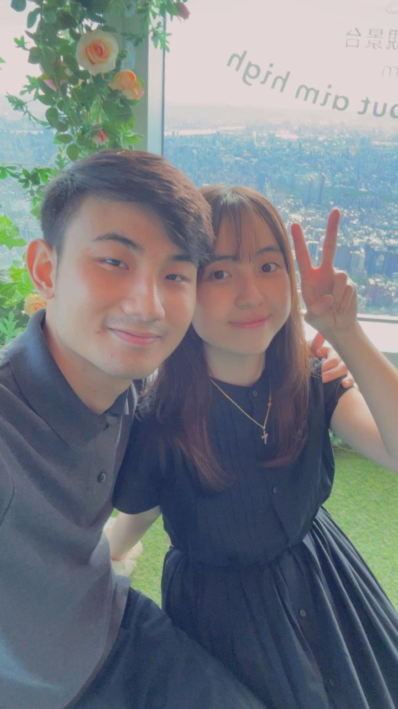
05 08
05 08
Just a small website dedicated to showing how much I really love and care for you. No matter what happens, I will always be there for you.

05 08
our favorite chapter
i know this might not be the perfect website yet, but im still trying and making it good
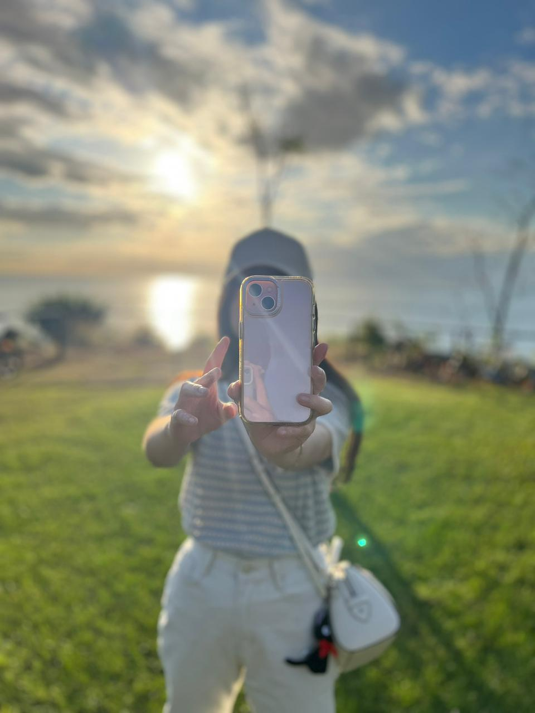
my happiest place
end of december 2024
December 2024
At the end of December 2024, we experienced fine dining on the cruise and it was super nice. Watching the glow of the sunset and the scenery around us while enjoying delicious food made me happy. Seeing your smile is the happiest thing that has ever happened in my life. I will always keep that smile and always make you smile.
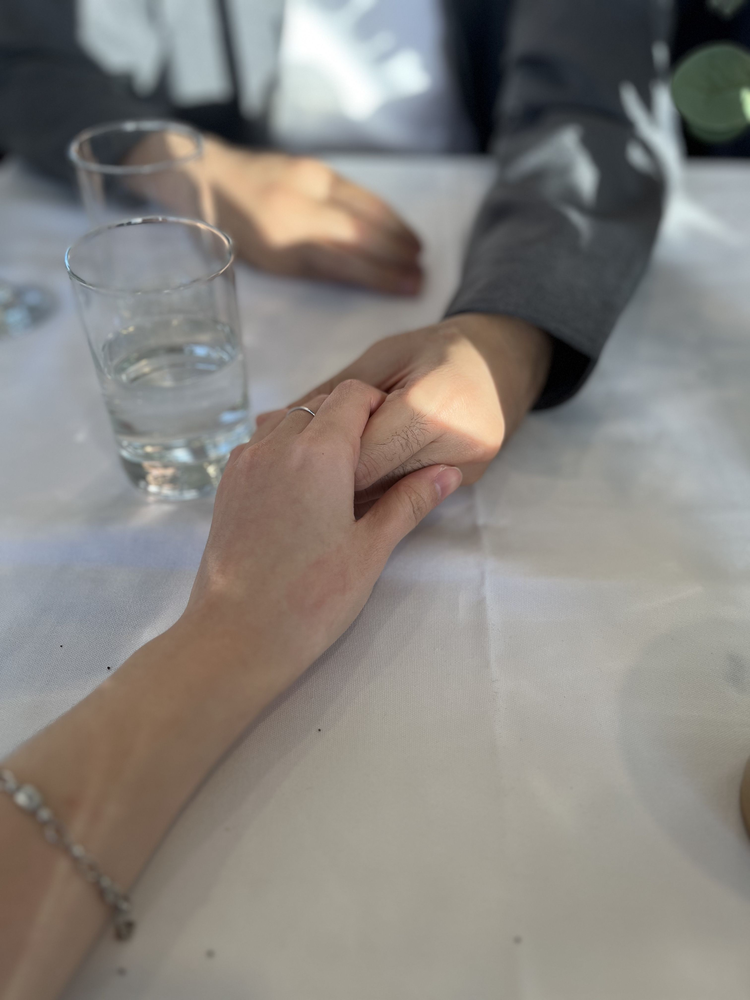
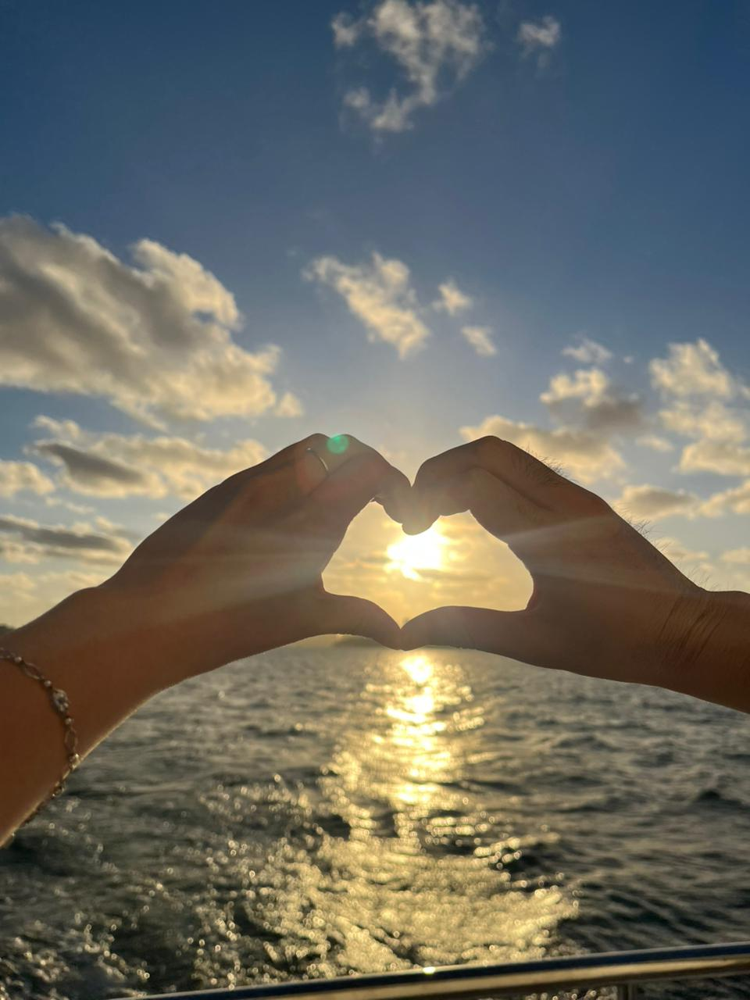
sunset, dinner, you
The lights, the view, the food, and your smile made everything feel even more beautiful that night.
favorite moments
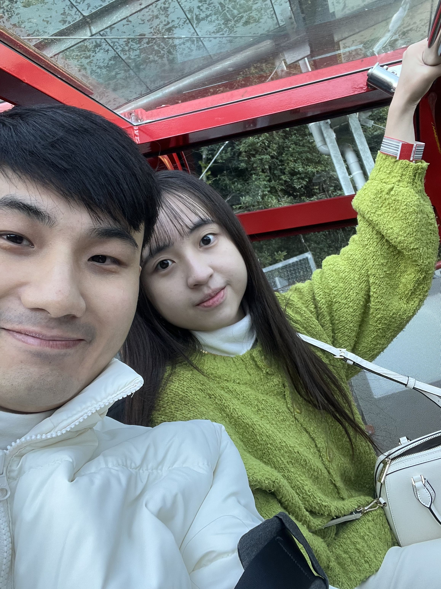
our sweetest scenes
Moments that stay soft and beautiful in my heart.your smile
“Seeing your smile is the happiest thing that has ever been in my life.”
kept close
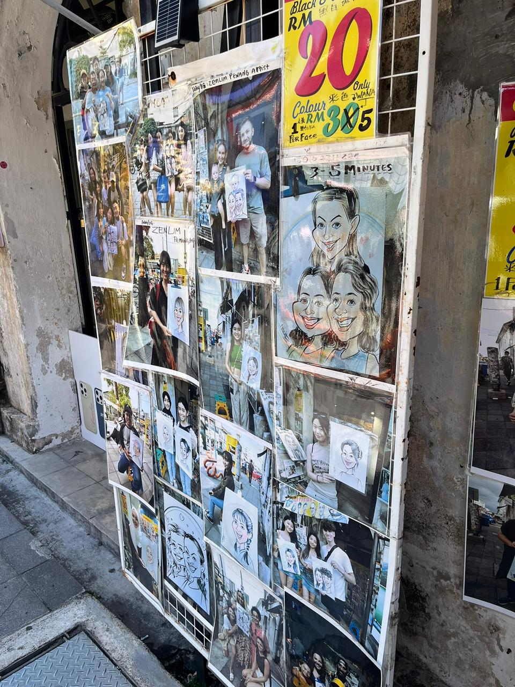
love this view
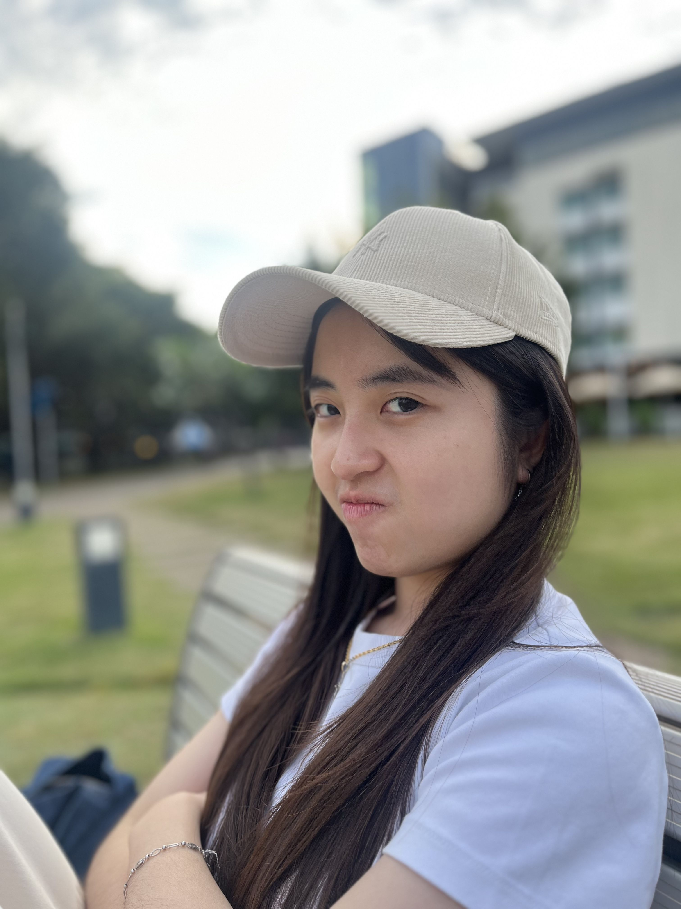
kept forever
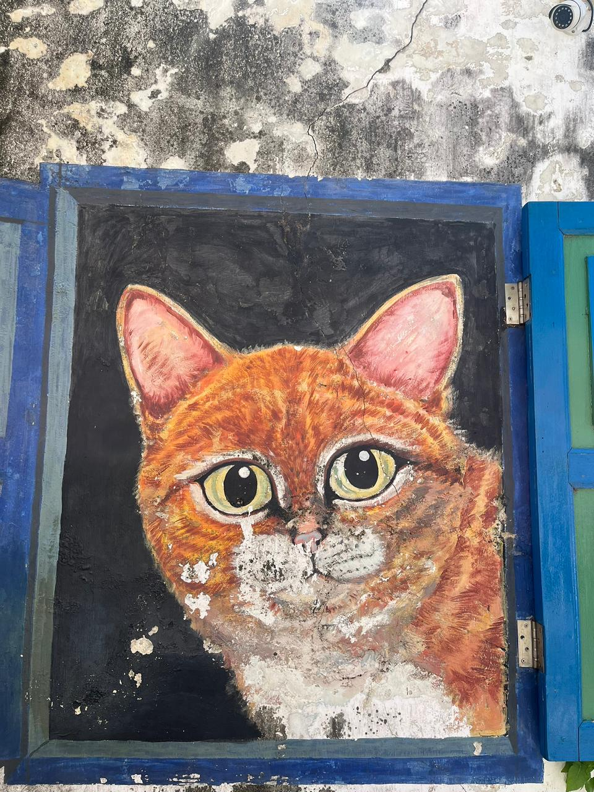
little adventures
a little note
Thank you for being part of the moments that make my life feel warm, gentle, and full. Even the quiet scenes become special because they are with you.
Open Final Pageour video
press play
This space is for a video of us, so the page can hold not only photos and words, but also the little moments that feel alive every time they are played again.
birthday soundtrack
make a wish
Today deserves candles, soft music, sweet memories, and every little thing that makes you feel loved.
final spread
our little album
Every photo holds a moment I never want to forget.No matter where this page is opened, I just want it to carry a little piece of my heart and remind you how deeply you are loved.
If you remember, I also made some of the website for you before. Here was when you graduated from the English school.
Open Graduation Pagethe first page
If you remember, my first website for you is this. It was the day that I expressed my feelings through a website, and our journey began.
Open The First Websitelittle keepsakes
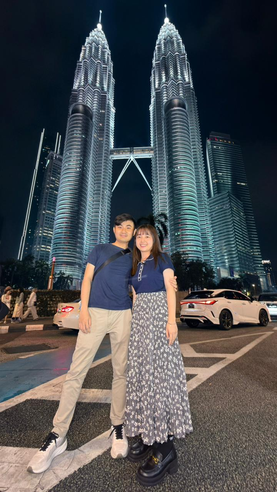
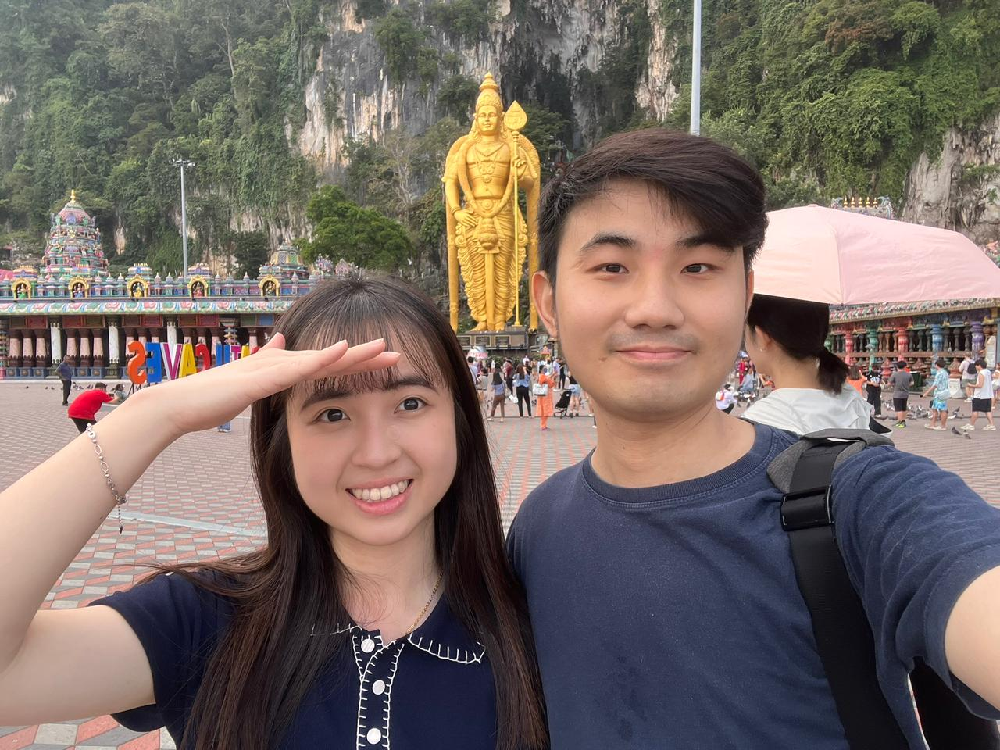
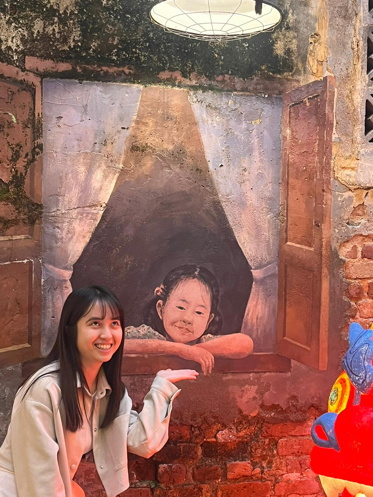
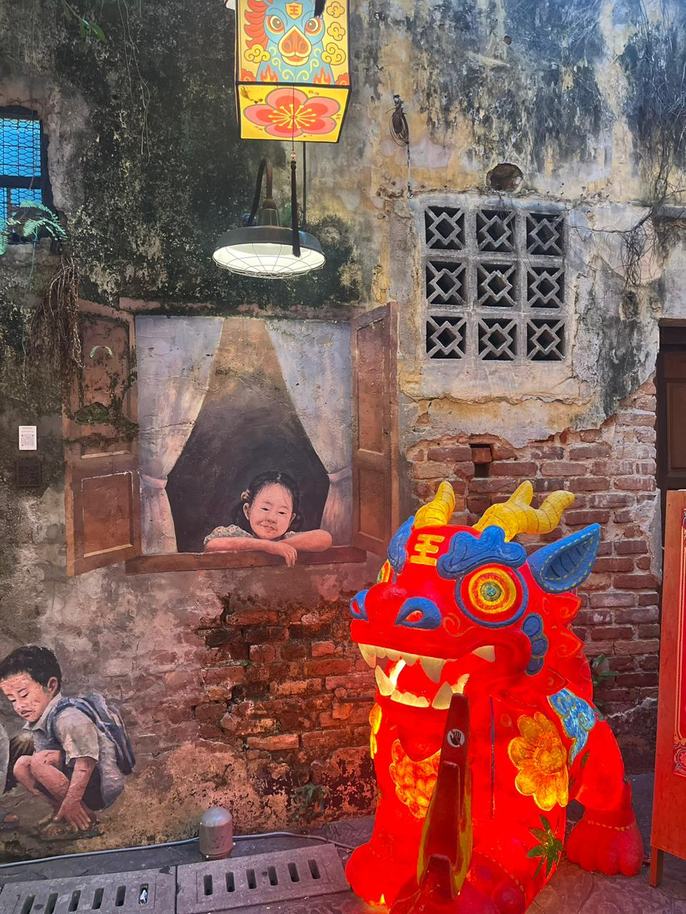
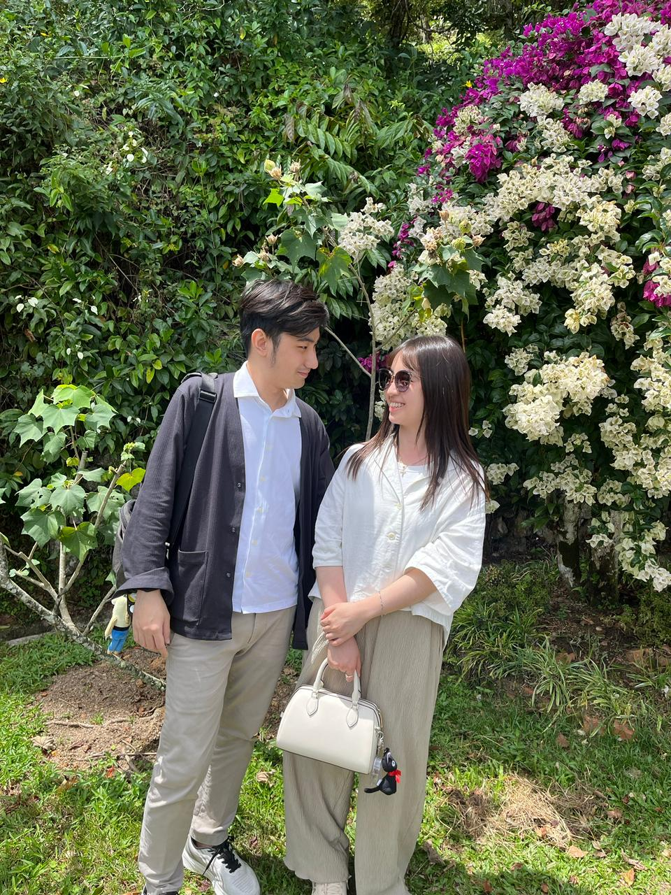
pieces of us
The small smiles, the quiet days, the beautiful nights, and every memory in between. Even the tiniest moments with you feel worth saving, because everything becomes more special when it is with you.
I may not always say everything perfectly, but I hope this page can still show how precious you are to me.